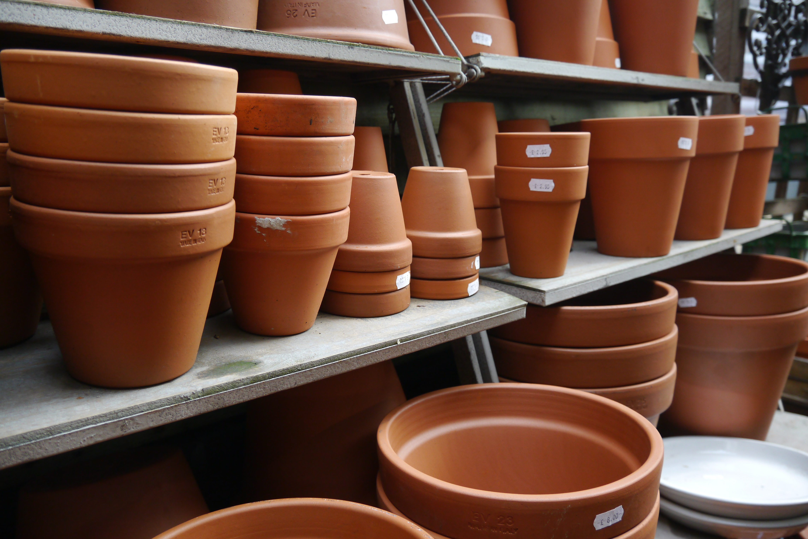

Basic Gardening
Items Needed
- Gardening Gloves
- Small Pots
- Soil
- Small Plants from Nursery
Gardening in 10 easy steps
- Gather your gloves, soil, pots, and small plants and place in your working area
- Open up bag of soil and begin to work the soil in the bag by moving the soil around so it is not tough or hard when transferred to the pots
- Begin to place worked soil in the pots
- Leave about 1”-2” of space at the top of the pot
- Remove plants from the current container; push the plant up so the roots can move out of the container with the plant
- Place small plant in the pot with the soil
- Pat down the soil around the plant so it is settled in its new home
- Add water to the new plant in the new pot and place in sun (per directions on plant label)
- Add a tad more soil on the top of your new potted plant
- Provide continual care to plant with water and sun

Ceramic Pots
 Pots and Potting Soil
Pots and Potting Soil
 Plants in Pots
Plants in Pots
Planting Schedule
| Types of Plants |
Month to Plant |
| Cauliflower |
January |
| Broccoli |
January |
| Cabbage |
February |
| Chard |
March |
| Cucumber |
April |
| Corn |
June |
| Greenbean |
May |
| Broccoli |
January |
| Melon |
April |
| Squash |
April |
| Lima Bean |
April |
| Eggplant |
March |